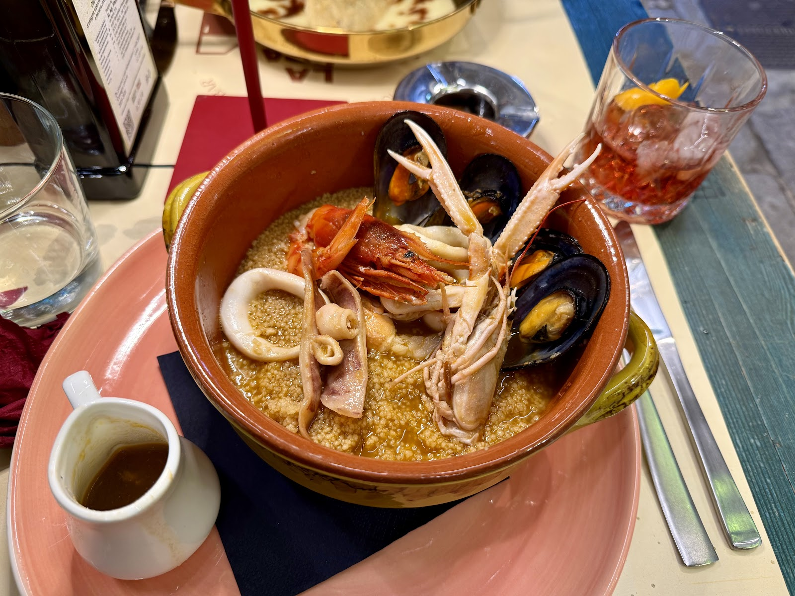
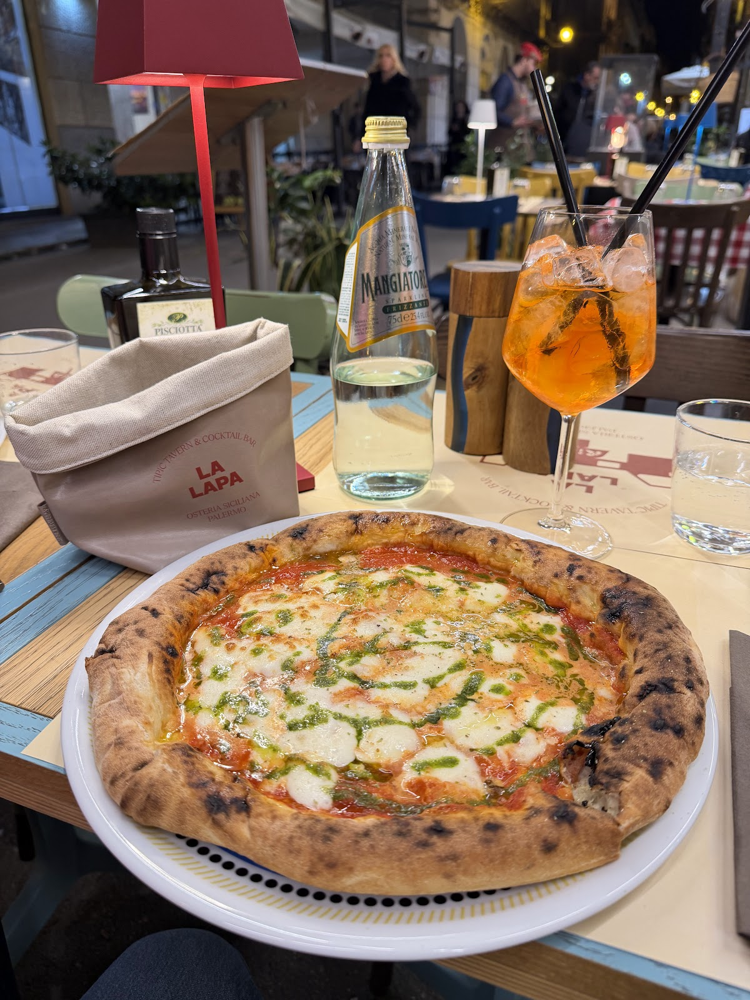
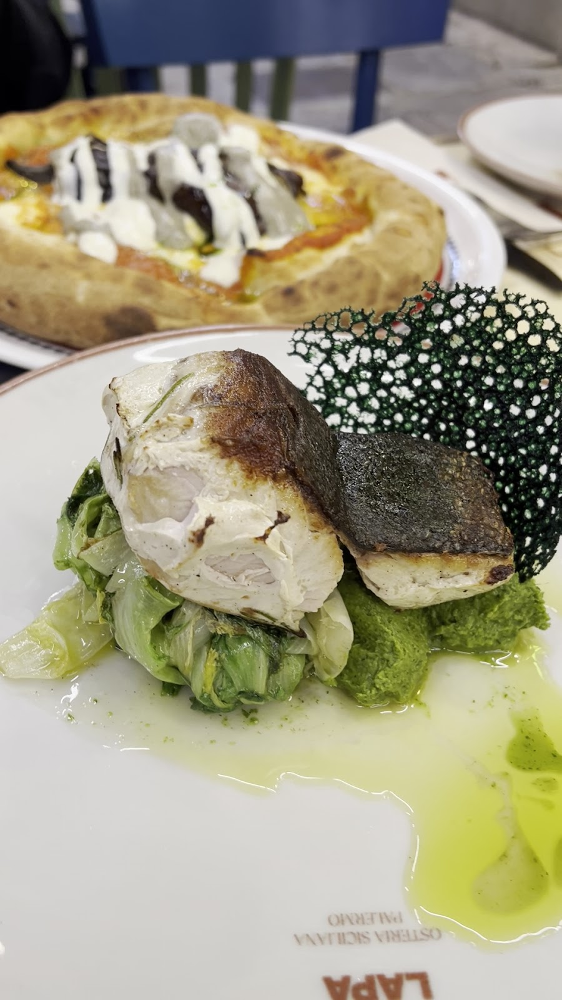
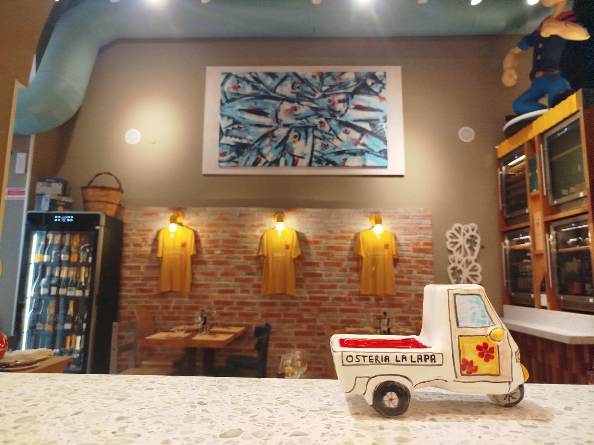
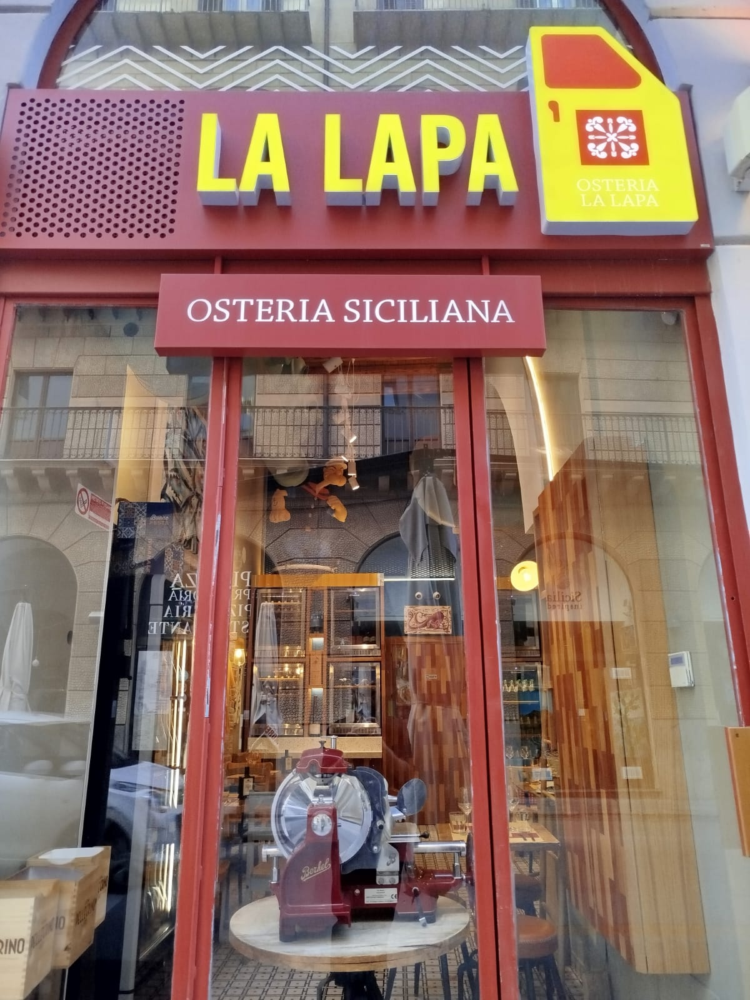
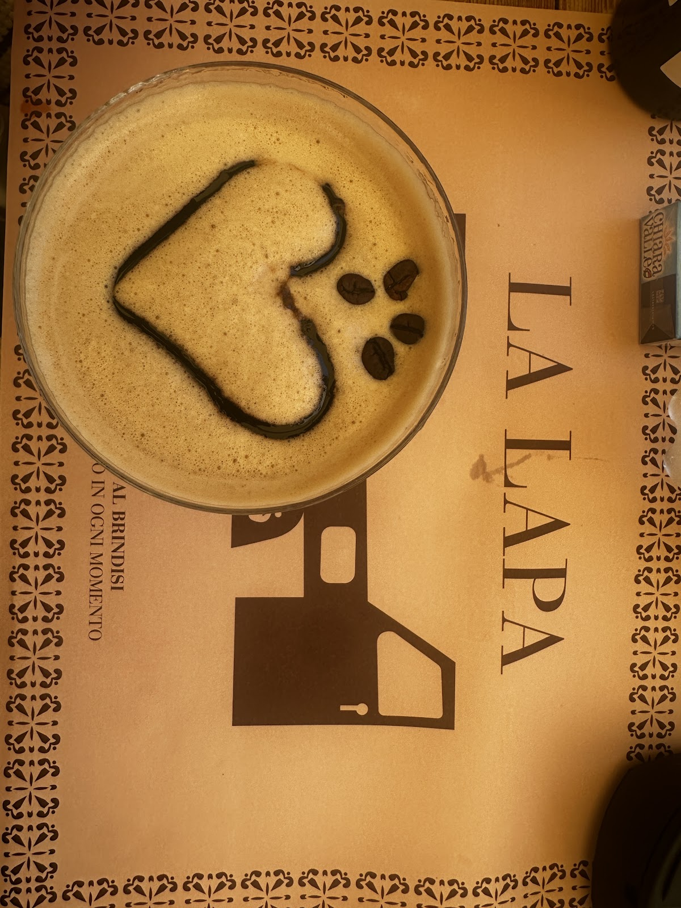
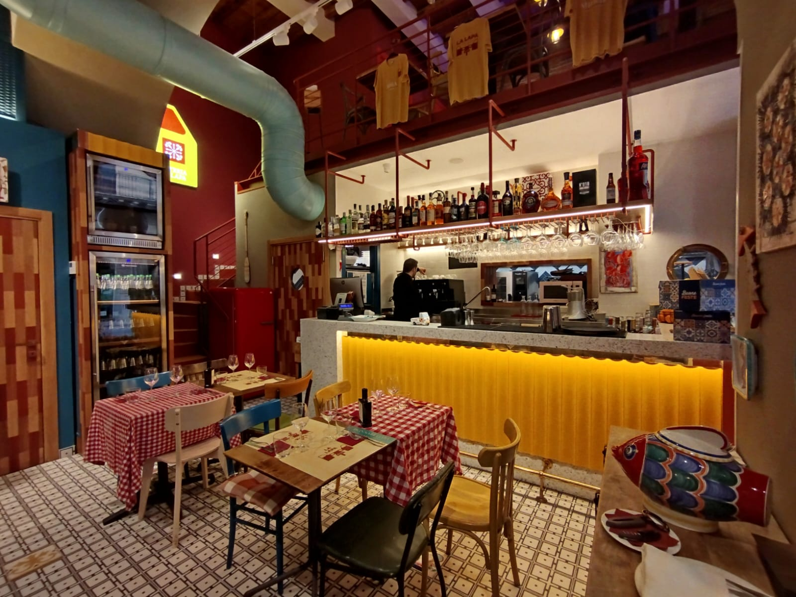

Come l'Ape a tre ruote che gira per i mercati: piccola, rumorosa di sapori, impossibile da non notare. Cucina siciliana in dialetto, sul Cassaro.

"Lapa" è come i siciliani chiamano l'Ape Piaggio — il motocarro che porta il mercato in ogni vicolo. La nostra cucina fa lo stesso viaggio: piatti che si chiamano in dialetto, prodotti dei presìdi Slow Food, e il Cassaro fuori dalla porta.
"Lapa" is Sicilian for the three-wheeled Ape — the little truck that carries the market into every alley. Our kitchen makes the same trip: dialect-named dishes, Slow Food presidium ingredients, and Palermo's oldest street outside the door.
Dalla colazione lenta alla cena tarda: cucina aperta dalle 10 a mezzanotte, tutti i giorni.

Tentacoli rosticciati al rosmarino, mousse di bottarga, pomodorini — 23 €

Vele di tonno affumicato, caponata, cipolla fermentata — 20 €

Ribs e salsiccia nel sugo di casa, crostoni all'aglio — 18 €



"We had dinner in this restaurant every single day. The pizza is super delicious, the other food amazing too!"
"Delicious Sicilian food. Great friendly service. Loved the cocktails too."
"We got invited in a very spontaneous and friendly way. An amazing dinner and a really great service."
★ 4,5 / 5 — 397 recensioni su Google
| Lunedì – DomenicaMon – Sun | 10:00 – 24:00 |
| CucinaKitchen | Orario continuatoNon-stop kitchen |
Corso Vittorio Emanuele 291, 90133 Palermo — fra Cattedrale e Quattro Canti
Un messaggio su WhatsApp e la lapa vi tiene il posto. One WhatsApp message and the lapa saves your seat.
💬 WhatsApp 📞 378 003 9794 Apri in Maps